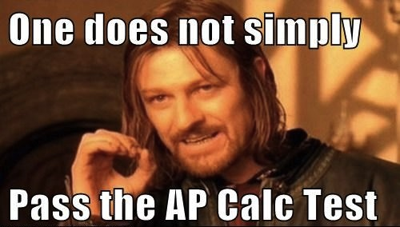

School basically dominates my life. If is wasn't for school, I would pretty much have nothing else to do. On the other hand, I would have more time for other activities, such as basketball or bowling, and I would have more to write about on the activities page. I am a very diligent student. I always get my work done, no matter how much it is. I was hoping that during the winter break I would have some free time. However, that couldn't happen either, as I was saddled with making this 10-page website about me, as well as a 10-page report. No matter how busy I am, the effort is well worth it when I see the high 90s on each of my report cards. I don't know what it will be like when I go to college, but I'm ready for it. Below is an essay I once wrote a long time ago for English class. If you read it, you can get a glimpse of exactly what kind of work I do.
---------------------------------------------------------------------------------------------------------------------------------------------------
Click here to see an essay I wrote.
---------------------------------------------------------------------------------------------------------------------------------------------------
These images represent what my academic life is like.
Note: The image to the right contradicts what I've said about myself, but it is only relevant to about 10% of all calculus tests I take.